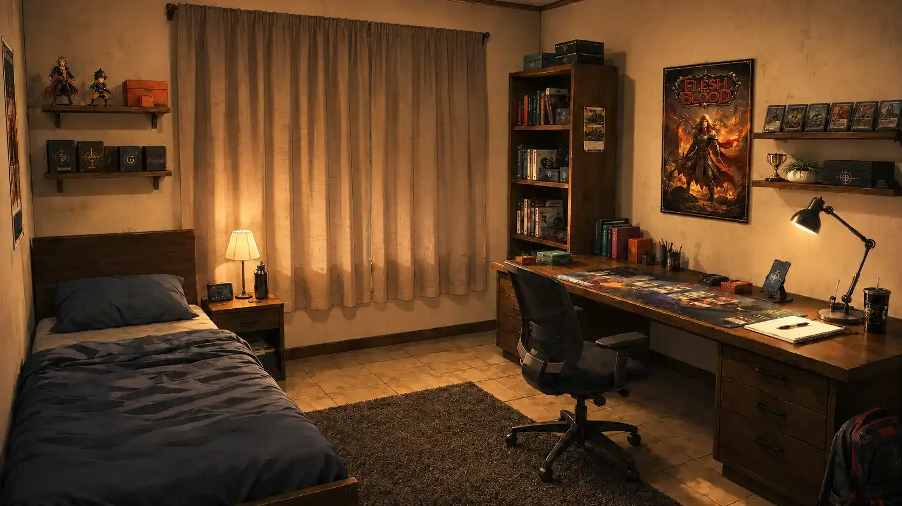

Formato principal
Visual Novel
Tela cheia, fundo que muda com a história, personagens, objetos, texto dinâmico e botões de voltar/avançar.
História #001 • 25/06/2026
A página da postagem funciona como central da história. Daqui saem as versões em Visual Novel, Texto e, no futuro, Graphic Novel. Assim a Home continua limpa e apenas direciona para as páginas.

Formato principal
Tela cheia, fundo que muda com a história, personagens, objetos, texto dinâmico e botões de voltar/avançar.
Leitura
Versão em conto/capítulo, boa para revisar o roteiro antes de quebrar em cenas.
Planejado
Espaço reservado para páginas em quadrinhos, thumbnails, capítulos e versões diagramadas.